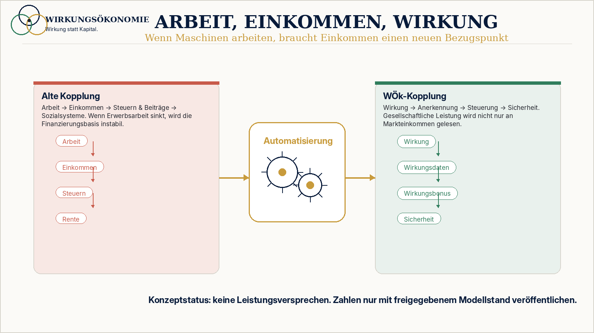

Was läuft heute falsch?
Alterssicherheit hängt stark an Erwerbsarbeit und Kapitalrendite, obwohl Stabilität breiter entsteht.
 Wirkungsökonomie
Wirkungsökonomie
Für wen · Warum zuerst
Warum Alterssicherheit mehr als Einzahlung und Erwerbsbiografie braucht.
Das Rentensystem misst vor allem Erwerbsbiografie und Einzahlung. Gesellschaftliche Stabilitätsleistung entsteht aber auch durch Care, Pflege, Bildung, Prävention und Kapitalwirkung.
Warum diese Seite wichtig ist
Alterssicherheit hängt stark an Erwerbsarbeit und Kapitalrendite, obwohl Stabilität breiter entsteht.
Höhere Beiträge, spätere Renten oder Kapitaldeckung lösen nicht automatisch die Frage, welche Leistungen das System langfristig tragen.
Die WÖk macht Lebensleistung, Care, Bildung, Pflege, Kapitalwirkung und Generationenstabilität sichtbar.
Von Einzahlung allein zu Lebensleistung, Wirkung und Generationenstabilität.

Was heute falsch läuft
Nicht jede gesellschaftlich tragende Leistung erscheint in der Erwerbsbiografie.
Pflege, Sorgearbeit und Bildung stabilisieren Systeme, sind aber oft schlecht abgebildet.
Kapitaldeckung kann Zukunftsrisiken finanzieren, wenn Kapitalwirkung ignoriert wird.
Demografische Risiken werden zu selten mit Prävention und Gemeinwesen verbunden.
Warum WÖk besser ist
Die WÖk verspricht keine Rentenzahl. Sie stellt die tiefere Frage, welche gesellschaftliche Wirkung Alterssicherheit trägt und welche Kapitalwirkung kommende Generationen stabilisiert.
Konkreter Nutzen
Care, Pflege, Bildung und Gemeinwesen werden als Stabilitätsleistung sichtbar.
Kapitalwirkung und Zukunftsrisiken werden in Altersvorsorgefragen einbezogen.
Keine einfachen Zahlenversprechen, sondern klare Modellstände und Statushinweise.
Vorher / Nachher
Heute
Rente misst Einzahlung und Erwerbsbiografie.
Wirkungsökonomie
Rente fragt zusätzlich nach Lebensleistung und gesellschaftlicher Wirkung.
Heute
Rendite steht oft isoliert.
Wirkungsökonomie
Kapitalwirkung und Zukunftsrisiken werden mitgedacht.
Heute
Lasten werden oft technisch verteilt.
Wirkungsökonomie
Stabilität zwischen Generationen wird wirkungslogisch sichtbar.
Wirkungspfad
Der Wirkungspfad kommt erst nach dem Warum: Er zeigt, wie Problem, Daten, Bewertung und Rückkopplung praktisch verbunden werden.
Konkretes Beispiel
Pflege und Bildungsarbeit stabilisieren das System, erscheinen aber oft nur indirekt in Rentenlogiken. Die WÖk macht diese Wirkung sichtbar, ohne automatisch eine konkrete Rentenhöhe abzuleiten.
Was nicht passiert
Konkrete Zahlen gelten nur als ausdrücklich freigegebene Modellrechnung.
Diese Seite erklärt Systematik, nicht individuelle Ansprüche.
Erwerbsarbeit bleibt wichtig, wird aber nicht als einzige Stabilitätsleistung gelesen.
Erste Schritte
Keine Zahlen ohne freigegebene Modellrechnung verwenden.
Rendite und Zukunftsrisiko gemeinsam betrachten.
Stabilitätsleistungen begrifflich sauber erfassen.
Vertiefung
Der erste Schritt ist kein perfekter Umbau, sondern eine prüfbare Wirkungsfrage.
Evidenz / Stand